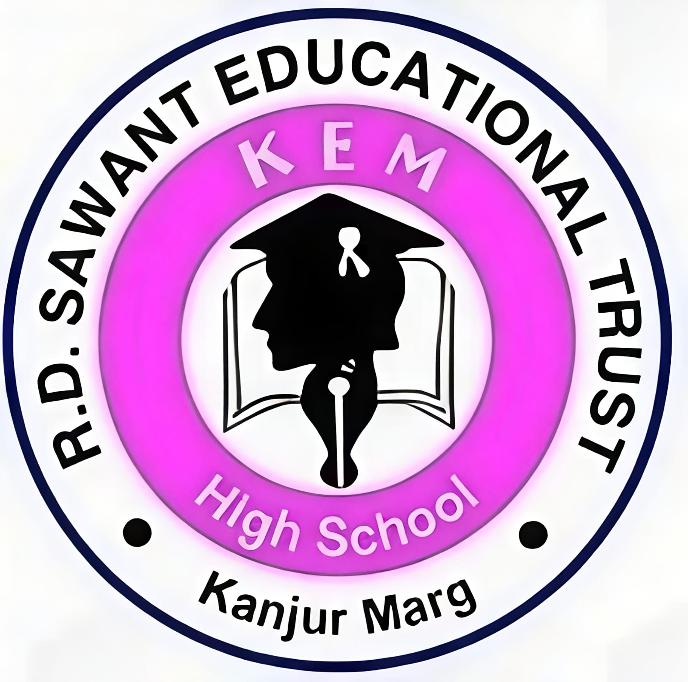

|
Hello! I am Amey Dhoke, currently pursuing my interests in Machine Learning and Natural Language Processing. During my Bachelor's degree, I worked on several NLP-based projects, which sparked my interest in AI and language technologies. Apart from ML and NLP, I enjoy working with Linux systems, servers, and system administration. I currently serve as a System Administrator at IIT Bombay, where I get to work with Linux-based infrastructure and server management. Outside of academics and technology, I enjoy swimming, watching wildlife documentaries, following Formula 1 and professional golf. I have also completed two internships that have helped me gain practical industry experience, which are listed below. Fun Fact: I am surprisingly good at throwing playing cards! |

Role:SDE Intern
I got to work on this Startup where we created a AI tutor. This tutor had multiple roles like Vivekananda, Sachin Tendulkar and other big figures, so whenever students ask these people their doubts they will explain solution in that particular persona. We had contnet from 1st grande to 10th grade and were mostly targetting IB Schools. We also had a ppt generation pipeline for creating ppts for a particular topic. I also got to work on a lot of reseach on which tools and frameworks to use for this tasks.
Role:SDE Inter
I got to work with cerelabs on a RAG pipeline. The problem statement was that there were many contract documents and alos legal lease documents, and normal people usually don't spend time on reading and understaing the entire document, so inorder to make the process more easy for end users we had to create a RAG Pipeline where the user can upload their documents and ask questions on those documents. We used Azure cloud to both store data (vector embeddings) and also the question answering task. we wrote a python script which automates the entire process of uploading on Azure and then users can ask questions. The frontend was made in Streamlit.